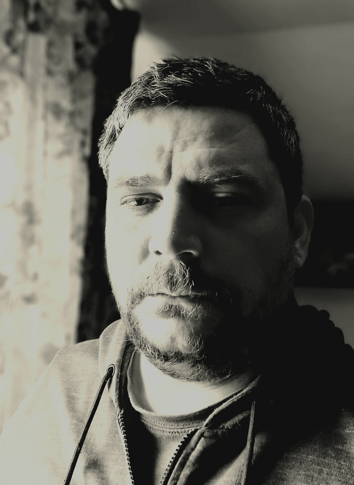

Stefan Pantiru
Desenator tehnic
Web Developer
Experienta profesionala
- Desenator tehnic - Straight Projects & More (Dec. 2022 - prezent)
- Redactarea planurilor de arhitectura, intocmirea documentatiilor de autorizare la nivel DTAC si PTh
- Intocmirea documentatiilor de urbanism de tip PUZ - PUD
- Desenator tehnic - Beta Proiect (Apr. 2006 - Oct. 2022)
- Redactarea planurilor de arhitectura, structura si instalatii, intocmirea documentatiilor de autorizare la nivel DTAC SI PTh
- Relevarea cladirilor exitente si intocmirea documentatiilor necesare autorizarii PSI
Skills
- Revit - avansat
- Autocad - avansat
- Twinmotion - avansat
- Word - avansat
- Excel - mediu
- HTML - incepator
Educatie
- 2000 - 2003 Facultatea de arhitectura G. M. Cantacuzino din cadrul Universitatii tehnice Gh. Asachi - studii nefinalizate
- 1996 - 2000 Liceul de arte si meserii Gh. Asachi - profil arhitectura
- Atestat de desnator tehnic in constructii civile si industriale si in amenajarea teritoriului